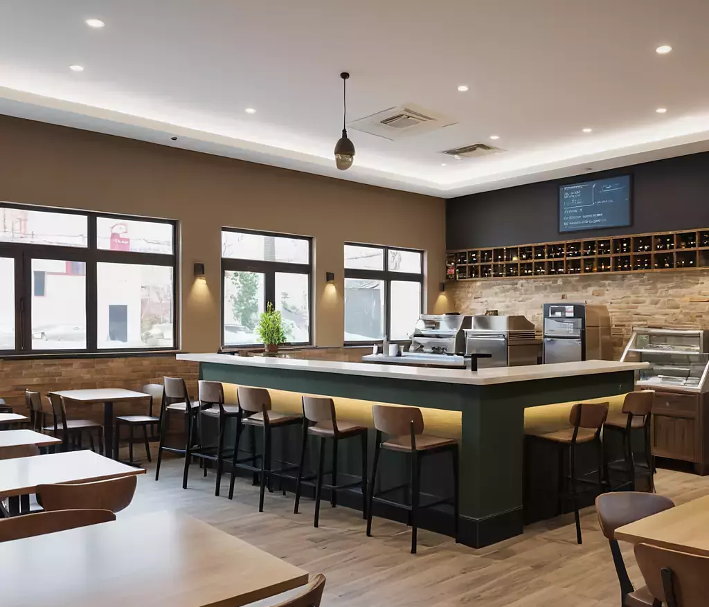

Bienvenidos a Café del Sol
Bienvenido a Café del Sol, tu destino para disfrutar de momentos deliciosos y reconfortantes. Somos más que una simple cafetería: somos un refugio acogedor en el corazón de la ciudad, donde puedes relajarte, conectar con amigos y saborear las mejores bebidas y alimentos.
En nuestra cafetería, nos apasiona el arte de hacer café. Utilizamos granos cuidadosamente seleccionados y técnicas de preparación expertas para servirte la taza perfecta, cada vez. Desde un espresso intenso hasta un suave latte, nuestro equipo está comprometido a proporcionarte una experiencia de café excepcional.
Pero no se trata solo del café: también ofrecemos una exquisita selección de pasteles caseros, bocadillos frescos y opciones de desayuno para satisfacer todos los gustos. Cada bocado está preparado con amor y atención, utilizando ingredientes de la más alta calidad.
Ya sea que necesites un impulso de energía por la mañana, un lugar tranquilo para trabajar o simplemente un momento para relajarte, te invitamos a que te unas a nosotros en Café del Sol. ¡Esperamos verte pronto!
